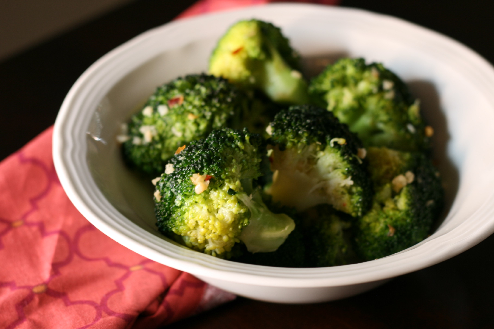

Broccoli

Description
Spicy Garlic Broccoli Dish
Ingredients
- 2 tablespoons extra-virgin olive oil
- 1 pound fresh broccoli, cut into spears
- 3 cloves garlic, minced
- 1 pinch red pepper flakes
- 3 tablespoons water
- salt and ground black pepper to taste
Steps
- Heat oil in a nonstick pan
- Add garlic and pepper flakes to the hot oil and cook for 2 to 3 minutes
- Add broccoli and stir until well coated in oil
- Add water and cover the pan.
- Steam until tender but not mushy, about 5 minutes.
- Add salt and pepper.